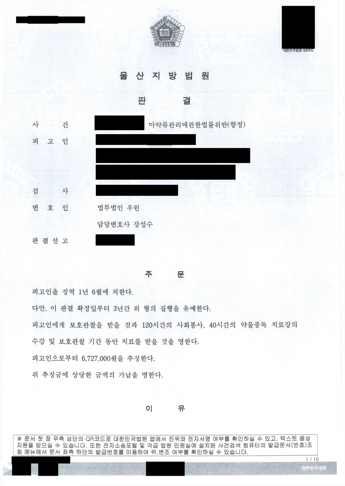

핵심 결과
마약 사건에서 초범이라는 말은 생각만큼 큰 방패가 아닙니다.
투약 횟수가 쌓이면 초범이어도 실형이 나옵니다.
이 사건은 매수 8회, 투약 8회, 매수 미수 2회였습니다.
의뢰인은 구속된 상태에서 약 3개월간 구금돼 있었습니다.
법무법인 우린은 처벌만으로는 재범을 막을 수 없다는 점, 치료가 필요한 사안이라는 점을 구조적으로 제시했습니다.
결과는 징역 1년 6월에 집행유예 3년, 그리고 보호관찰과 치료명령이었습니다.
| 구분 | 내용 |
|---|---|
| 사건 분야 | 마약류관리에관한법률위반(향정) — 엑스터시 |
| 행위 태양 | 매수 8회, 투약 8회, 매수 미수 2회 |
| 동종 전력 | 없음 (이종 벌금 전력 1회) |
| 사건 초기 상태 | 구속, 약 3개월 구금 |
| 결정적 대응 | 전파 정황 부존재 입증, 치료 구조 제시 |
| 최종 결과 | 징역 1년 6월 / 집행유예 3년 / 보호관찰·사회봉사 120시간 / 치료강의 40시간 및 치료명령 / 추징 약 670만 원 |
어떤 사건이었나
의뢰인은 텔레그램 메신저를 통해 엑스터시를 구매했습니다.
판매상이 알려준 대행 계좌로 대금을 무통장 입금하고, 지정된 장소에서 물건을 회수하는 방식이었습니다.
이른바 좌표를 받아 찾아가는 거래입니다.
이런 방식으로 여덟 차례에 걸쳐 엑스터시를 매수했고, 그때마다 투약했습니다.
두 차례는 입금까지 했지만 지정된 장소에서 물건을 찾지 못해 미수에 그쳤습니다.
계좌 추적으로 거래 내역이 드러났고, 소변 검사에서도 반응이 나왔습니다.
의뢰인은 구속됐습니다.
실형 위험이 컸던 이유
- 투약과 매수가 각각 8회로 반복성이 뚜렷했습니다.
- 미수 2회를 포함하면 관련 범행이 열여덟 건이었습니다.
- 각 범행이 경합범으로 묶여 처단형 상한이 징역 15년까지 올라갔습니다.
- 계좌 내역과 소변 감정 결과가 있어 사실관계를 다투기 어려웠습니다.
- 이미 구속 상태였습니다.
부인할 수 없는 사건에서 무엇을 다툴 것인지부터 정해야 했습니다.
마약 초범인데 왜 실형이 나오나요
초범 여부보다 횟수와 기간, 그리고 전파 가능성을 먼저 보기 때문입니다.
양형기준에서 이 사건은 마약범죄 중 투약·단순소지 등 제3유형(향정 나목 및 다목)에 해당했습니다.
각 죄의 기본영역 권고형은 징역 10월에서 2년입니다.
그런데 범행이 여러 개면 다수범죄 처리기준이 적용됩니다.
기본범죄 형량범위의 상한에 경합범죄 상한의 일부를 순차로 더하는 방식입니다.
이 사건에서는 그 결과 권고형 범위가 징역 10월에서 3년 8월이 됐습니다.
여기서 아무 대응을 하지 않으면 실형 구간에서 형이 정해집니다.
| 법원이 무겁게 보는 사정 | 이 사건에서의 판단 |
|---|---|
| 범행 횟수 | 8회 매수·투약, 죄질과 범정이 매우 불량하다고 명시 |
| 확산 위험 | SNS를 통한 마약범죄의 급속한 확산과 위험성을 언급 |
| 사회적 해악 | 마약류가 개인과 사회에 끼치는 해악의 중대성 |
| 일반예방 | 매수·투약 범행을 엄히 처벌할 필요성 |
마약 사건에서 다툴 지점은 사실관계가 아니라, 이 사람이 다시 하지 않을 구조가 있느냐입니다.
해결 전략
1. 전파 정황이 없다는 점을 명확히 했습니다
마약 사건에서 양형을 가르는 가장 큰 분기점은 유통 여부입니다.
투약자에 그치는지, 다른 사람에게 넘겼는지에 따라 사안의 성격이 달라집니다.
거래 내역과 통신 자료를 전부 정리해 의뢰인이 매수한 엑스터시를 판매하거나 교부하는 등 전파한 정황이 없다는 점을 확인시켰습니다.
판결에도 전파하였다고 볼 만한 사정은 확인되지 않는다는 판단이 그대로 반영됐습니다.
2. 처벌이 아니라 치료가 필요한 사안임을 제시했습니다
마약은 의지의 문제로만 접근하면 재범을 막을 수 없습니다.
그래서 단약 의지를 말로 강조하는 대신, 실제로 치료를 받는 구조를 준비했습니다.
마약류 관리에 관한 법률 제40조의2는 법원이 보호관찰과 함께 치료를 받을 것을 명할 수 있도록 하고 있습니다.
이 조항을 근거로 보호관찰 하에 치료를 받는 것이 재범방지에 필요하다는 점을 정리해 제출했습니다.
재판부는 이 구조를 받아들여 치료명령을 함께 부과했습니다.
3. 구금 기간과 주변의 감독 가능성을 자료로 만들었습니다
약 3개월의 구금 기간 동안 의뢰인이 무엇을 인식했는지를 구체적으로 정리했습니다.
동시에 출소 후 누가 어떻게 관리할 수 있는지를 함께 제출했습니다.
지인들의 선도 다짐과 생활 기반에 관한 자료가 여기에 들어갔습니다.
판결에도 구금생활을 통해 단약할 것을 다짐하면서 잘못을 반성하고 있고, 주변에서도 선도를 다짐하며 선처를 호소하고 있다는 점이 유리한 정상으로 기재됐습니다.
결과
법원은 죄질과 범정이 매우 불량하다고 분명히 했습니다.
마약류가 개인과 사회 전반에 끼치는 해악, SNS를 통한 확산의 위험성을 들어 엄중한 처벌이 필요하다고 했습니다.
동시에 동종 전력이 없다는 점, 전파 정황이 확인되지 않는다는 점, 구금생활을 통해 단약을 다짐하며 반성하고 있다는 점을 함께 고려했습니다.
최종 결과
징역 1년 6월에 집행유예 3년이 선고되었습니다.
여기에 보호관찰, 사회봉사 120시간, 약물중독 치료강의 40시간 수강, 보호관찰 기간 동안의 치료명령이 함께 부과됐습니다.
추징금은 약 670만 원이었습니다.
의뢰인은 구속에서 풀려나 치료를 받으며 일상으로 돌아갔습니다.
조사를 앞두고 있다면
가장 먼저 확인할 것은 소변과 모발 검사 일정입니다.
간이시약 검사와 정밀 감정은 의미가 다르고, 결과가 나오는 시점도 다릅니다.
그다음은 진술 범위입니다.
마약 사건은 수사기관이 계좌와 통신 자료를 이미 확보한 상태에서 조사가 시작되는 경우가 많습니다.
이때 확인된 것보다 적게 말하면 반성이 없다고 읽히고, 확인되지 않은 것까지 넓게 말하면 스스로 범행을 늘리게 됩니다.
무엇이 이미 확보돼 있는지를 먼저 파악해야 합니다.
마지막은 치료입니다.
선고 직전에 급하게 치료를 시작하면 형식적으로 보입니다.
수사 단계부터 치료를 받고 있었다는 기록이 있어야 재판부가 진정성을 인정합니다.
자주 묻는 질문
| 질문 | 답변 |
|---|---|
| 마약 초범이면 집행유예를 받나요? | 횟수가 적고 단순 투약이면 가능성이 있지만, 반복되면 초범이어도 실형이 나옵니다. |
| 투약 횟수는 어떻게 계산되나요? | 각 투약이 별개의 범죄로 처리되어 경합범으로 묶이고, 다수범죄 처리기준에 따라 권고형이 올라갑니다. |
| 치료명령은 어떤 경우에 붙나요? | 마약류 관리에 관한 법률 제40조의2에 따라 보호관찰과 함께 치료가 필요하다고 인정될 때 부과됩니다. |
| 추징금은 어떻게 정해지나요? | 실제로 취득한 마약류의 가액을 기준으로 산정되며, 미수에 그친 부분은 제외됩니다. |
| 구속됐는데 집행유예가 가능한가요? | 가능합니다. 이 사건도 약 3개월 구금 상태에서 시작해 집행유예로 마무리됐습니다. |
| 언제부터 치료를 받아야 하나요? | 수사 단계부터입니다. 선고 직전에 시작하면 형식적이라는 인상을 줍니다. |
결론
마약 사건에서 다툴 지점은 대개 사실관계가 아닙니다.
계좌와 감정 결과가 이미 나와 있는 경우가 많기 때문입니다.
실제로 결과를 가르는 것은 유통이 아니라 투약에 그쳤다는 점, 그리고 재범을 막을 치료 구조가 실제로 만들어져 있다는 점입니다.
두 가지를 자료로 보여줄 수 있으면 반복 투약 사건에서도 결과가 달라집니다.
다만 이 구조는 하루아침에 만들어지지 않습니다.
본 사례는 의뢰인 보호를 위해 일부 내용을 각색했으며, 처분 결과와 형량은 실제와 같습니다.
사무장·상담실장 없이 변호사가 직접 상담합니다
마약 사건은 구속 여부가 먼저 결정되고, 그 뒤에 양형이 정해집니다.
두 단계 모두 준비 시점이 결과를 좌우합니다.
법무법인 우린은 강성수 변호사가 직접 상담하고, 조사 대응부터 치료 구조 설계, 양형자료 준비와 법정 변론까지 직접 맡습니다.
마약 관련 조사를 앞두고 있거나 가족이 구속됐다면, 지금 사건이 어느 단계에 있는지부터 확인해야 합니다.
이 글은 일반적인 법률 정보 제공을 위한 자료이며, 개별 사건의 결과를 보장하지 않습니다. 구체적인 대응은 사실관계와 증거에 따라 달라질 수 있습니다.